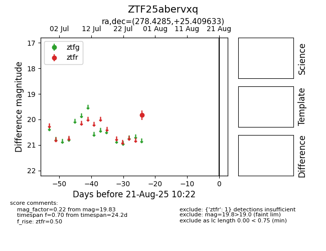

Target ZTF25abervxq at 2025-08-21 10:22, see:
FINK: fink-portal.org/ZTF25abervxq
Lasair: lasair-ztf.lsst.ac.uk/objects/ZTF25abervxq
ALeRCE: alerce.online/object/ZTF25abervxq
alt names
ZTF25abervxq (ztf,alerce)
coordinates:
equatorial (ra, dec) = (278.4285,+25.40963)
galactic (l, b) = (54.1737,+14.93746)
photometry
last ztfr=19.83
1 ztfr detections
